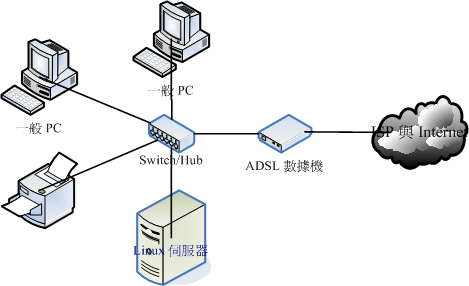

網路組成元件
我們來談談那麼組成電腦網路的元件有哪些呢？這些元件的定義為何啊？我們得要先知道有哪些硬體嘛！接下來才好理解啊。在這裡，我們以底下這張連線示意圖來解釋好了：

在上圖中，我們主要需要注意到的硬體有哪些呢？大致有底下這些啦：
- 節點 (node)：節點主要是具有網路位址 (IP) 的設備之稱， 因此上面圖示中的一般PC、Linux伺服器、ADSL數據機與網路印表機等，個別都可以稱為一個 node ！ 那中間那個集線器 (hub) 是不是節點呢？因為他不具有 IP ，因此 hub 不是節點。
- 伺服器主機 (server)：就網路連線的方向來說，提供資料以『回應』給用戶的主機， 都可以被稱為是一部伺服器。舉例來說，Yahoo 是個 WWW 伺服器，崑山的FTP(http://ftp.ksu.edu.tw/) 是個檔案伺服器等等。
- 工作站 (workstation) 或用戶端 (client)：任何可以在電腦網路輸入的設備都可以是工作站， 若以連線發起的方向來說，主動發起連線去『要求』資料的，就可以稱為是用戶端 (client)。舉例來說，一般 PC 打開瀏覽器對 Yahoo 要求新聞資料，那一般 PC 就是用戶端。
- 網路卡 (Network Interface Card, NIC)：內建或者是外插在主機上面的一個設備， 主要提供網路連線的卡片，目前大都使用具有 RJ-45 接頭的乙太網路卡。一般 node 上都具有一個以上的網路卡， 以達成網路連線的功能。
- 網路介面：利用軟體設計出來的網路介面，主要在提供網路位址 (IP) 的任務。 一張網卡至少可以搭配一個以上的網路介面；而每部主機內部其實也都擁有一個內部的網路介面，那就是 loopback (lo) 這個迴圈測試介面！
- 網路形態或拓樸 (topology)：各個節點在網路上面的連結方式，一般講的是物理連接方式。 舉例來說，上圖中顯示的是一種被稱為星形連線 (star) 的方式，主要是透過一個中間連接設備， 以放射狀的方式連接各個節點的一種形態，這就是一種拓樸。
- 網關 (route) 或通訊閘 (gateway)：具有兩個以上的網路介面， 可以連接兩個以上不同的網段的設備，例如 IP 分享器就是一個常見的網關設備。那上面的 ADSL 數據機算不算網關呢？ 其實不太能算，因為數據機通常視為一個在主機內的網卡設備，我們可以在一般 PC 上面透過撥號軟體， 將數據機模擬成為一張實體網卡 (ppp) ，因此他不太能算是網關設備啦！